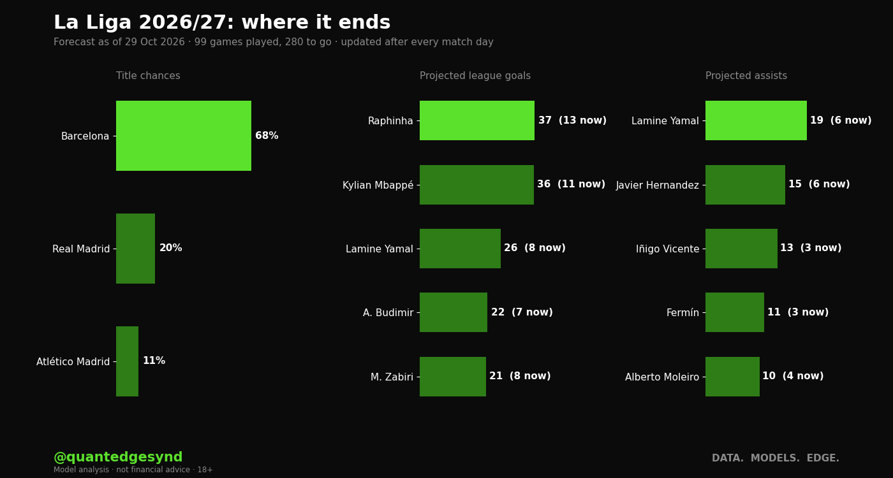
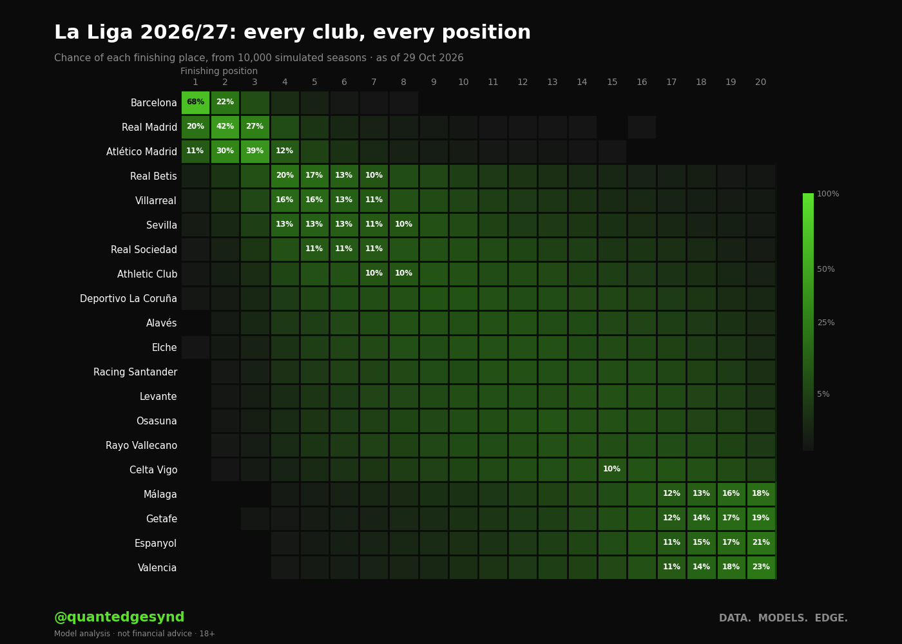

Barcelona are 68% to win La Liga, with Real Madrid next on 20%. 99 games played, 280 to go. Re-run after every match day.
- Top scorer. Raphinha (Barcelona) has 13 and projects to about 37. He finishes top in 47% of our simulated seasons.
- Most assists. Lamine Yamal (Barcelona) has 6, projected about 19.
- Going down. Most likely: Valencia (55%), Espanyol (52%), Getafe (50%).
Ratings over the table. Our relegation numbers lean on ratings more than the table: Valencia are 55% to go down on 6 points, with 1 club below them on fewer.

The projected table
Clubs in order of average finishing position across 10,000 simulated seasons, which is not always the order of projected points. Relegated means the automatic places. Likely finish is the range a club ends in at least eight seasons out of ten.
| Club | Played | Points now | Projected points | Likely finish (8 in 10) | Title | Top 4 | Relegated |
|---|---|---|---|---|---|---|---|
| Barcelona | 10 | 27 | 81 | 1st to 2nd | 68% | 100% | - |
| Real Madrid | 10 | 24 | 74 | 1st to 4th | 20% | 96% | - |
| Atlético Madrid | 10 | 25 | 72 | 1st to 4th | 11% | 91% | - |
| Real Betis | 10 | 20 | 60 | 3rd to 11th | <1% | 32% | <1% |
| Villarreal | 10 | 12 | 58 | 4th to 12th | <1% | 24% | 1% |
| Sevilla | 10 | 17 | 57 | 4th to 13th | <1% | 19% | 1% |
| Real Sociedad | 10 | 19 | 55 | 4th to 14th | <1% | 12% | 2% |
| Athletic Club | 9 | 12 | 53 | 5th to 15th | <1% | 7% | 3% |
| Deportivo La Coruña | 10 | 11 | 51 | 5th to 16th | <1% | 5% | 5% |
| Alavés | 10 | 12 | 50 | 6th to 17th | - | 4% | 6% |
| Elche | 10 | 10 | 49 | 6th to 17th | <1% | 3% | 8% |
| Racing Santander | 10 | 11 | 49 | 6th to 18th | - | 2% | 10% |
| Levante | 10 | 10 | 48 | 7th to 18th | - | 2% | 12% |
| Osasuna | 10 | 11 | 48 | 7th to 18th | - | 2% | 12% |
| Rayo Vallecano | 9 | 9 | 47 | 7th to 18th | - | 2% | 15% |
| Celta Vigo | 10 | 12 | 45 | 8th to 19th | - | 1% | 20% |
| Málaga | 10 | 5 | 40 | 12th to 20th | - | <1% | 47% |
| Getafe | 10 | 9 | 40 | 12th to 20th | - | <1% | 50% |
| Espanyol | 10 | 8 | 39 | 12th to 20th | - | <1% | 52% |
| Valencia | 10 | 6 | 39 | 13th to 20th | - | <1% | 55% |
Every position
Each club's chance of finishing in each place. Brighter means more likely. Blank means it did not happen once in 10,000 simulated seasons, which is not the same as impossible. <1% means under half a percent.

The numbers behind the chart, every club and every place
| Club | 1 | 2 | 3 | 4 | 5 | 6 | 7 | 8 | 9 | 10 | 11 | 12 | 13 | 14 | 15 | 16 | 17 | 18 | 19 | 20 |
|---|---|---|---|---|---|---|---|---|---|---|---|---|---|---|---|---|---|---|---|---|
| Barcelona | 68% | 22% | 8% | 2% | <1% | <1% | <1% | <1% | ||||||||||||
| Real Madrid | 20% | 42% | 27% | 7% | 2% | 1% | 1% | <1% | <1% | <1% | <1% | <1% | <1% | <1% | <1% | |||||
| Atlético Madrid | 11% | 30% | 39% | 12% | 5% | 2% | 1% | <1% | <1% | <1% | <1% | <1% | <1% | <1% | <1% | |||||
| Real Betis | <1% | 2% | 9% | 20% | 17% | 13% | 10% | 7% | 6% | 4% | 3% | 2% | 2% | 1% | 1% | 1% | <1% | <1% | <1% | <1% |
| Villarreal | <1% | 2% | 6% | 16% | 16% | 13% | 11% | 9% | 7% | 5% | 4% | 3% | 3% | 2% | 1% | 1% | 1% | <1% | <1% | <1% |
| Sevilla | <1% | 1% | 4% | 13% | 13% | 13% | 11% | 10% | 8% | 7% | 5% | 4% | 3% | 3% | 2% | 1% | 1% | <1% | <1% | <1% |
| Real Sociedad | <1% | 1% | 3% | 9% | 11% | 11% | 11% | 9% | 9% | 8% | 7% | 6% | 4% | 4% | 3% | 2% | 2% | 1% | <1% | <1% |
| Athletic Club | <1% | <1% | 2% | 6% | 8% | 9% | 10% | 10% | 9% | 9% | 7% | 7% | 6% | 5% | 4% | 3% | 2% | 2% | 1% | <1% |
| Deportivo La Coruña | <1% | <1% | 1% | 4% | 6% | 7% | 8% | 9% | 9% | 9% | 8% | 7% | 7% | 6% | 6% | 5% | 4% | 3% | 2% | 1% |
| Alavés | <1% | 1% | 3% | 4% | 6% | 7% | 8% | 9% | 8% | 9% | 8% | 7% | 7% | 6% | 5% | 4% | 3% | 2% | 1% | |
| Elche | <1% | <1% | 1% | 2% | 4% | 5% | 6% | 8% | 7% | 8% | 8% | 8% | 8% | 7% | 7% | 6% | 5% | 4% | 3% | 1% |
| Racing Santander | <1% | <1% | 2% | 3% | 5% | 5% | 6% | 7% | 7% | 8% | 8% | 8% | 8% | 8% | 7% | 6% | 5% | 4% | 2% | |
| Levante | <1% | <1% | 1% | 3% | 4% | 5% | 6% | 7% | 8% | 8% | 8% | 8% | 8% | 8% | 8% | 7% | 5% | 4% | 2% | |
| Osasuna | <1% | <1% | 1% | 3% | 4% | 5% | 6% | 6% | 7% | 8% | 8% | 9% | 8% | 8% | 8% | 7% | 5% | 4% | 3% | |
| Rayo Vallecano | <1% | <1% | 1% | 2% | 3% | 5% | 5% | 6% | 7% | 7% | 8% | 8% | 9% | 8% | 8% | 7% | 6% | 5% | 3% | |
| Celta Vigo | <1% | <1% | 1% | 1% | 2% | 3% | 4% | 5% | 6% | 6% | 8% | 8% | 9% | 10% | 9% | 9% | 9% | 7% | 5% | |
| Málaga | <1% | <1% | <1% | 1% | 1% | 2% | 2% | 3% | 4% | 5% | 6% | 7% | 9% | 12% | 13% | 16% | 18% | |||
| Getafe | <1% | <1% | <1% | <1% | <1% | 1% | 1% | 2% | 3% | 4% | 4% | 6% | 8% | 9% | 12% | 14% | 17% | 19% | ||
| Espanyol | <1% | <1% | <1% | 1% | 1% | 1% | 2% | 2% | 3% | 4% | 6% | 7% | 9% | 11% | 15% | 17% | 21% | |||
| Valencia | <1% | <1% | <1% | 1% | 1% | 1% | 2% | 2% | 3% | 4% | 5% | 6% | 9% | 11% | 14% | 18% | 23% |
Top scorers
League goals only. The range is where he ends up in eight seasons out of ten.
| Player | Club | Goals now | Projected | Range (8 in 10) | Finishes top |
|---|---|---|---|---|---|
| Raphinha | Barcelona | 13 | 37 | 28 to 46 | 47% |
| Kylian Mbappé | Real Madrid | 11 | 36 | 26 to 47 | 44% |
| Lamine Yamal | Barcelona | 8 | 26 | 18 to 34 | 5% |
| A. Budimir | Osasuna | 7 | 22 | 14 to 29 | 1% |
| M. Zabiri | Racing Santander | 8 | 21 | 15 to 28 | 1% |
| Sergio Camello | Rayo Vallecano | 7 | 20 | 14 to 28 | 1% |
| Roberto Fernández | Espanyol | 6 | 17 | 11 to 24 | <1% |
| L. Boyé | Alavés | 5 | 16 | 10 to 23 | <1% |
| Fer Niño | Elche | 6 | 15 | 10 to 20 | <1% |
| P. Aubameyang | Deportivo La Coruña | 5 | 14 | 9 to 20 | <1% |
Most assists
| Player | Club | Assists now | Projected | Range (8 in 10) | Finishes top |
|---|---|---|---|---|---|
| Lamine Yamal | Barcelona | 6 | 19 | 12 to 26 | 47% |
| Javier Hernandez | Espanyol | 6 | 15 | 10 to 21 | 16% |
| Iñigo Vicente | Racing Santander | 3 | 13 | 8 to 20 | 11% |
| Fermín | Barcelona | 3 | 11 | 6 to 16 | 3% |
| Alberto Moleiro | Villarreal | 4 | 10 | 6 to 15 | 2% |
| Álex Berenguer | Athletic Club | 4 | 10 | 6 to 15 | 2% |
| Unai López | Rayo Vallecano | 3 | 10 | 5 to 15 | 3% |
| A. Gordon | Barcelona | 4 | 9 | 5 to 13 | 1% |
| J. Bellingham | Real Madrid | 3 | 9 | 5 to 14 | 1% |
| M. Díaz | Alavés | 4 | 9 | 5 to 13 | 1% |
How it works
Every league game left is played out 10,000 times. Team strengths come from our match ratings, built from this season's and last season's results. Points settle the table, then goal difference and goals scored. La Liga and Serie A break ties on head-to-head first, which we don't model.
A player's total is his goals or assists so far, plus his rate this season blended with last season's, times the share of minutes he is getting, times the games his team has left. When his team scores more in a simulated season, so does he.
What it can't see
Injuries still to come, January signings, manager changes and points deductions. Ratings don't allow for us being wrong about a team, so the biggest numbers run too high and the ranges too narrow. Our own test of league forecasts in English football found betting prices read a final table better than results-based ratings do, and that results-based ranges come out too narrow. This forecast uses results-based ratings, so treat the biggest numbers with care. It is not scored yet: we keep every update and will score them all when the season ends. How we scored our league forecasts before.
The other forecasts
Premier League forecast · Serie A forecast · Bundesliga forecast · Ligue 1 forecast · Champions League forecast · Ballon d'Or 2027 · Injury risk